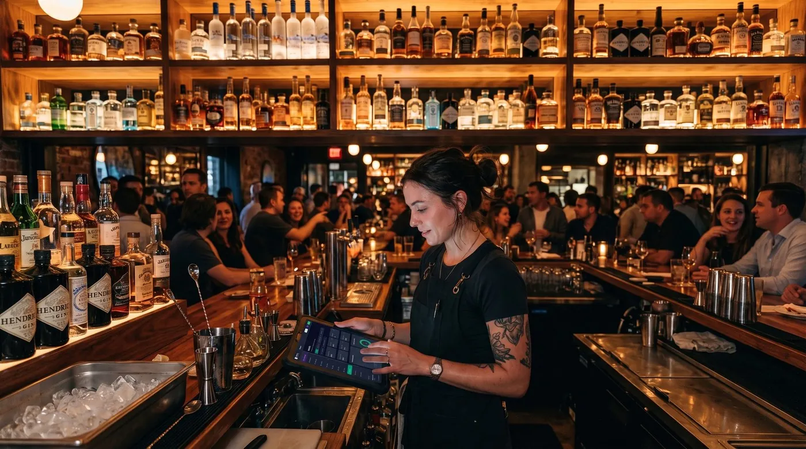

TPV para bar y hostelería: cómo elegir el mejor software para tu bar, cafetería o cervecería
Detrás de una buena barra hay siempre un buen TPV para bar. Cuando el local se llena, lo que marca la diferencia no es cuántas funciones tiene tu software, sino lo rápido que tomas una ronda, lo fácil que es mantener una cuenta abierta por mesa y lo limpio que cierras y divides la cuenta al final. En esta guía te explicamos, sin tecnicismos, qué debe tener un software TPV para hostelería, lo que en México y Latinoamérica se busca como sistema de punto de venta para bar, y cómo elegir uno que no te frene en hora punta.

Qué es un TPV para bar (y por qué no vale uno de tienda)
Un TPV para bar (terminal punto de venta) es el programa con el que tomas comandas, controlas las mesas y cobras. La diferencia con un TPV de tienda es de fondo: en una tienda cada venta es un ticket cerrado que empieza y termina en segundos. En un bar, en cambio, el cliente abre una cuenta y la va alimentando a lo largo del servicio: una caña, luego otra ronda, después la tapa, más tarde el café. El software tiene que pensar en términos de cuentas que se quedan abiertas, no de tickets sueltos.
Por eso un buen software de hostelería gira alrededor de tres ideas: rapidez en barra, cuentas abiertas por cliente o mesa y cierre flexible (entero, dividido o por persona). Si una herramienta no resuelve bien esas tres cosas, da igual lo bonita que sea: en hora punta te va a estorbar.
Las 7 necesidades reales de un bar
Antes de mirar marcas, conviene tener claro qué le vas a exigir al sistema. Estas son las necesidades que de verdad notas cada noche detrás de la barra:
- Rapidez en barra. Cobrar una ronda en dos o tres toques. Cada segundo de más es una cola que crece.
- Cuentas abiertas por cliente o mesa. Poder dejar una cuenta viva y añadirle consumiciones sin volver a empezar.
- Happy hour y varios precios. Que el mismo producto cueste distinto según la hora o la carta, sin tener que hacer cálculos a mano.
- Rondas y pagos divididos. Dividir la cuenta entre amigos, cobrar por persona o separar lo que paga cada uno.
- Control de stock de bebidas. Saber cuántos barriles, botellas o refrescos te quedan antes de quedarte sin existencias un sábado.
- Varios camareros. Que cada miembro del equipo trabaje con su acceso y tú sepas quién ha cobrado qué.
- Propinas. Registrar y repartir las propinas de forma ordenada, sin discusiones a final de turno.
Si una solución cubre estas siete, ya tienes el 90 % del trabajo hecho. El resto (informes, fidelización, reservas) es bienvenido, pero secundario.
Cuentas abiertas: el corazón de la barra
Si solo te puedes fijar en una función, que sea esta. La gestión de cuentas abiertas es lo que separa un TPV de hostelería de una simple caja registradora. La mecánica es sencilla pero potente: abres una cuenta a nombre de una mesa o de un cliente, y durante toda la velada vas añadiendo rondas a esa misma cuenta. Nada se pierde, nada se cobra dos veces.
Por qué cambia tu servicio
Con las cuentas abiertas bien resueltas, el camarero sirve primero y cobra después, sin frenar el ritmo. Cuando el cliente quiere pagar, cierras la cuenta de una vez, o la divides entre los comensales, o cobras solo lo que consumió cada uno. Y para los clientes de toda la vida, la peña del barrio, el equipo que viene cada semana, puedes incluso dejar la cuenta a deber y cobrar más tarde: es el clásico crédito a clientes o "fiado", controlado y sin libreta de papel.
Esa combinación de cuenta abierta + crédito a clientes es justo lo que muchos sistemas genéricos no hacen bien y lo que más vas a agradecer en un bar de barrio o una cervecería con clientela fija.
Funciones imprescindibles de un TPV de hostelería moderno
Más allá de las cuentas abiertas, un buen software TPV para bares y cafeterías en 2026 debería ofrecerte:
- Cobro rápido en barra con productos a un toque y atajos para las consumiciones más vendidas.
- Tarifas por horario para resolver el happy hour y los precios distintos de terraza, barra o carta.
- División de cuenta y pagos mixtos (parte en efectivo, parte con tarjeta).
- Modo sin conexión que siga cobrando aunque se caiga internet y sincronice solo al volver.
- Control de stock de bebidas para anticipar reposiciones de barriles, botellas y refrescos.
- Multiusuario y permisos para gestionar a varios camareros y sus propinas.
- Preparado para la facturación electrónica, por si un cliente o una empresa te pide factura.
Nuestra recomendación
Comparamos las opciones por lo que de verdad importa en una barra: rapidez, cuentas abiertas, flexibilidad al cobrar y coste real. Esta es nuestra selección.
digabloPos
digabloPos es un TPV en la nube moderno pensado para moverse al ritmo de una barra. Su plan base es gratis para siempre (sin límite de tiempo y sin tarjeta de crédito), está listo en unos minutos y destaca justo en lo que más cuesta a un bar: el cobro rápido y, sobre todo, las cuentas abiertas con crédito a clientes. Funciona en modo sin conexión con sincronización automática y crece con módulos que activas solo cuando los necesitas.
Sobre la facturación: está preparado para la facturación electrónica, así que si un cliente te pide factura no te quedas vendido. Antes de contratar, confirma con el proveedor el detalle según tu país (España, México u otro mercado) para asegurarte de que encaja con tu gestoría o contador.
👍 Fortalezas
- Cuentas abiertas / crédito a clientes
- Plan base gratis, para siempre
- Cobro rápido en barra
- Funciona sin internet, con sincronización
- Módulos que crecen contigo
- Preparado para la facturación electrónica
👎 A tener en cuenta
- Marca más nueva que los gigantes del sector
- Conviene confirmar el detalle de facturación según tu país
- Algunos módulos avanzados son de pago
TPV de hostelería tradicional (suite local)
Las suites clásicas de hostelería instaladas en un ordenador del local cubren bien mesas, comandas a cocina y stock. Son sólidas y muy completas, pero suelen implicar licencia de pago por puesto, hardware específico y una puesta en marcha más lenta. Buena opción si ya tienes infraestructura y prefieres todo en local, menos ágil si buscas empezar gratis y desde una tablet.
App de cobro / terminal de pago
Las apps ligadas a un datáfono o lector de tarjetas son cómodas para cobrar, pero giran en torno a la comisión por transacción y su gestión de cuentas abiertas suele ser limitada. Sirven como complemento de cobro, se quedan cortas como sistema central de un bar con mucho volumen y rondas.
¿Quieres probar tu barra sin gastar nada?
El plan base de nuestra opción #1 es gratis para siempre, se configura en pocos minutos y sin tarjeta de crédito.
Crear mi TPV de bar gratisTabla comparativa
| Criterio | digabloPos | Suite local clásica | App de cobro |
|---|---|---|---|
| Plan base gratis | Sí | No (licencia) | App sí |
| Cuentas abiertas / crédito a clientes | Sí | Parcial | Limitado |
| Cobro rápido en barra | Sí | Sí | Básico |
| Modo sin conexión | Sí | Sí (local) | Limitado |
| Happy hour / varios precios | Sí | Sí | Limitado |
| Preparado para factura electrónica | Sí | Según versión | Por separado |
| Tiempo de puesta en marcha | Pocos minutos | Medio / lento | Rápido |
Cuadro orientativo de junio de 2026. Las funciones y condiciones cambian con frecuencia y dependen del país y del plan contratado. Confirma siempre los detalles con cada proveedor antes de decidir, en especial lo relativo a la facturación electrónica.
Cómo elegir tu TPV para bar, paso a paso
- Prueba las cuentas abiertas primero. Abre una mesa, añádele varias rondas, divídela y ciérrala. Si eso es ágil, vas bien.
- Cronométralo en barra. Mide cuántos toques necesitas para cobrar una ronda típica.
- Comprueba el modo sin conexión. Que siga cobrando si se cae internet y sincronice solo después.
- Revisa precios y happy hour. Configura una tarifa por horario y verifica que se aplica sola.
- Piensa en tu equipo. Varios camareros, sus permisos y el reparto de propinas.
- Suma el coste real a 12 meses. Licencias, módulos y, si las hubiera, comisiones de cobro.
- Confirma la facturación de tu país. Pregunta cómo emite factura electrónica según tu mercado y tu gestoría.
¿Listo para tu primera ronda?
Monta tu TPV de bar gratis en pocos minutos, sin compromiso y sin tarjeta. Después confirma con el proveedor el detalle de tu facturación.
Empezar gratisPreguntas frecuentes
¿Qué es un TPV para bar y en qué se diferencia de uno de tienda?
Un TPV para bar es un software de punto de venta pensado para la hostelería: gestiona cuentas abiertas por mesa o por cliente, varias rondas sobre la misma comanda, distintos precios según la hora (happy hour), división de la cuenta y varios camareros cobrando a la vez. Un TPV de tienda está orientado a ventas cerradas de un solo ticket, sin esa idea de cuenta que se va sumando durante el servicio.
¿Qué son las cuentas abiertas y por qué son tan importantes?
Una cuenta abierta es una comanda que permanece activa mientras el cliente consume. En lugar de cobrar cada bebida por separado, el camarero va añadiendo rondas a la mesa o al cliente y solo se cierra al final. Es la función central de cualquier TPV de bar: permite atender rápido en barra, no perder consumiciones y cobrar de una vez, dividido o por persona.
¿Un TPV para bar puede funcionar sin internet?
Sí, y es muy recomendable. En un bar lleno no puedes parar de cobrar porque se cayó la conexión. Un TPV con modo sin conexión sigue tomando comandas y cobrando con la información guardada en el dispositivo, y sincroniza las ventas automáticamente cuando vuelve internet.
¿Necesito un TPV de pago o existe uno gratuito para bares?
Hay opciones con un plan base gratuito que ya cubren lo esencial: cuentas abiertas, cobro rápido, varios camareros y control básico de bebidas. Lo sensato es empezar por un plan gratuito, probarlo en hora punta y pagar módulos adicionales solo cuando el negocio los necesite.